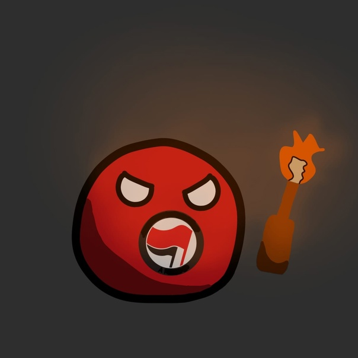

|
|
|
О НАСУЩНОМ
 |
Расправил ли Атлант плечи, наступило ли «счастье» и «за… шибись» в результате «конца истории», а также где сейчас бродит призрак коммунизма – на эти и другие важные вопросы отвечаем, взглянув с точки зрения диалектики на внутри- и внешнеполитические события в стране и мире. |
Утраченные иллюзии, реиндустриализация и призрак коммунизма |
Проблема мигрантов в РФ: |
День Победы |
|
Красный Ёж |
Статьи: | Мы в соцсетях
|